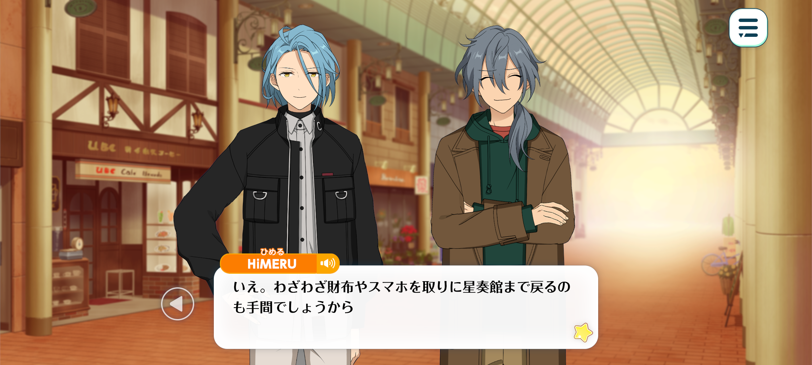
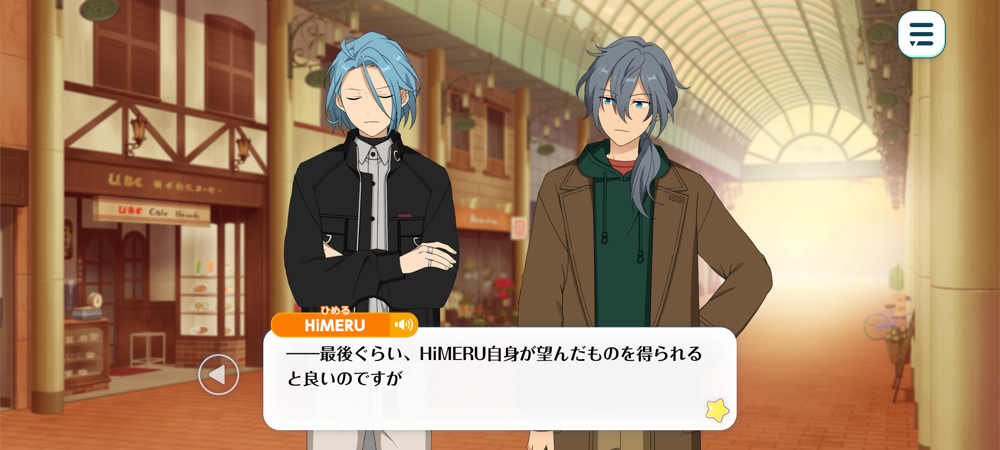

Scout! LUCKY SCRAMBLE
Fortunate Heartthrob – Chapter 8


Time: That evening

Niki: Gahh, I'm really sorry for making you come shopping with me.
HiMERU: No. It would have been inconvenient for you to return to the dorms just to collect your wallet and phone.
Niki: Make sure you get a receipt from every shop! That way, I can pay you back the exact amount once we get back.
I'm not like Rinne-kun, y'know. I actually pay people back!
HiMERU: —Wouldn't it be better to show a little more concern for actually getting that money back from Amagi?
Niki: Nahaha~…
Anyway, HiMERU-kun, aren't those bags getting heavy?
You could've asked Hakaze-kun to take the commemorative gift and lottery prizes back with him...
No matter what we buy, all the shopkeepers keep giving you extra things! Your pile of bags just keeps getting bigger and bigger.
HiMERU: ...They're certainly not light, but HiMERU can manage.
Niki: And these freebies are thanks to your good luck, too, huh~?
I mean, I come into town pretty regularly whenever meat, fish, and vegetables are on sale, so I'm practically a regular around here.
But I've never been given this much stuff before...!
HiMERU: That's good to hear. HiMERU is looking forward to seeing what Shiina makes with all these ingredients.
Niki: Leave it to me! ♪ I'll make something you'll really like, HiMERU-kun!
...Oh, wait. Come to think of it, didn't we get a ticket for that thing earlier? What was it again... A prize draw?
HiMERU: Ah, the grand prize is a pair of tickets to a hot spring resort... Well, HiMERU supposes we might as well give it a go since we've been given the chance.
Niki: With how lucky you've been today, HiMERU-kun, why not try your luck and aim for that trip?
HiMERU: It's a pair of tickets, and HiMERU wouldn't have anyone to accompany him. Wouldn't one of the other prizes be more suitable?
...Oh?
Niki: ?
HiMERU: Over there. There's a list showing the other prizes available.
Niki: Lemme see…
HiMERU & Niki: ... (Looking over the list of prizes.)
Niki: –Ah, aaAAA!
HiMERU-kun! HiMERU-kun! HiMERU-kun!
HiMERU: What is it? And was saying HiMERU’s name three times really necessary?
Niki: Look at the first-place prize! It's premium sukiyaki beef!
HiMERU: ...So it is. They have quite an impressive selection of prizes. You could even win the latest games console.
Niki: No matter how you look at it, the premium sukiyaki beef is the best prize here! After all, it's the one that'll fill our stomachs!
A trip to a hot spring or a games console won't fill you up, right? So meat is obviously the best choice!
HiMERU: What a remarkably biased argument...
—Shiina, would you like the beef?
Niki: Of course I would!
...But HiMERU-kun is the one paying for everything today.
If you're going to spend money on a lottery ticket, there's no point unless you get something you actually want.
HiMERU: ...Fufu. Perhaps HiMERU's good fortune has finally run out. He might end up winning nothing more than a consolation tissue.
Niki: A tissue? Is that really all you want...?
HiMERU: —In any case. If HiMERU were to win the beef, what would you do with it?
Niki: Eh? Wellll... If you're okay with it...
I'd use it to throw a sukiyaki party with everyone in Crazy:B! ♪
HiMERU: ...I see.
(Considering everything that has happened today, if HiMERU were to buy a lottery ticket, there's a very good chance he'd win the grand prize.)
(However, rather than winning a pair of tickets to a hot spring resort that would be of little use to him...)
(Even if it meant a noisy evening and less time to himself...)
(A dinner party with Crazy:B would be far more worthwhile. HiMERU could even say it would be a pleasant way to spend the evening.)
Niki: ...HiMERU-kun?

HiMERU: —HiMERU hopes to obtain what he truly desires in the end.
...Excuse me. One lottery ticket, please.
Niki: ...Gulp.
HiMERU: ... (Slowly pulls the lever of the lottery machine.)
HiMERU: —!
Niki: -!
Does that bell noise mean you've won something...? But what's that yellow ball that came out? What number is it?
HiMERU: ...It's the fourth-place prize. Apparently, it's the latest electric kettle.
The prize can be collected here and taken home immediately. More luggage for HiMERU to carry...
Niki: An electric kettle...
HiMERU: HiMERU intended to win the premium beef for the sukiyaki party. It seems his good fortune really has run out.
My apologies, Shiina. HiMERU has disappointed you.
Niki: ...Nah, it's fine. You actually look pretty relieved, though.
HiMERU: ? Do I?
Niki: Yeah! If you'd won the grand prize again, you'd probably have made a face like, 'Seriously? Again?'
If everything that happens to you is supposed to be good luck, it'd get pretty exhausting, wouldn't it?
HiMERU: ...Quite right. As Shiina says, HiMERU does feel somewhat relieved. At last, the evil spirit that had possessed HiMERU seems to have departed...
HiMERU really is sorry he couldn't win the beef for you, Shiina.
Niki: It's fine, I'm fine!
It would've been exciting to have a sukiyaki party with everyone, and I'm sure that beef would've been delicious.
But I've already started thinking about what else I could cook, and what we could do afterwards!
HiMERU: Fufu. HiMERU can tell you're pretending not to mind for his sake, Shiina.
Niki: Ughhh...
HiMERU: —In that case, HiMERU has a proposal. Why don't we stop by one more shop before heading home?
Niki: ...?